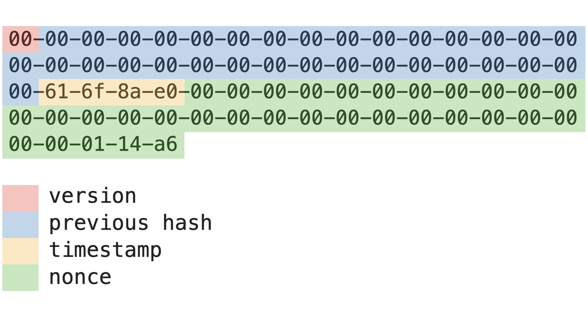
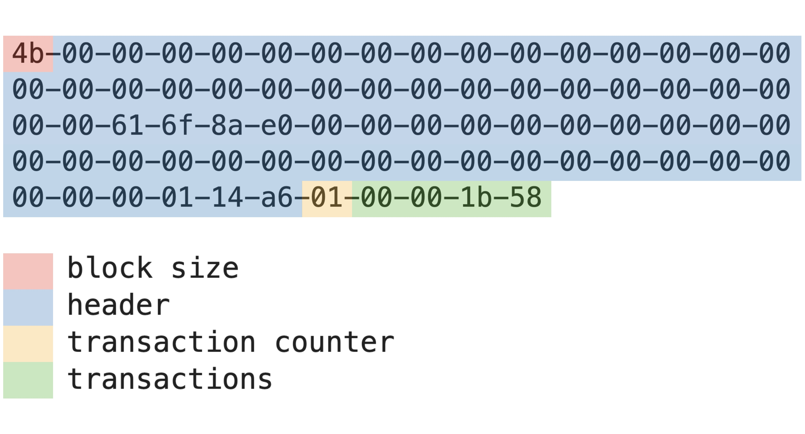

Blocks
Bitcoin is commonly thought about as a ledger of transactions. Let's use that as a starting point.
Headers
We group the transactions into 'blocks'. Each block starts with a header, with information on the block's contents:
- Version: The version number in use.
- Previous hash: Each block has an identifier or hash. Here the 32-byte hash from the previous block is an attribute of the header of the current block.
- Timestamp: Unix timestamp in seconds.
- Nonce: A number that makes the hash of the header start with zeroes.
Hash = bytes
VERSION: int = 0
def init_header(previous_hash: Hash, timestamp: int, nonce: int) -> bytes:
""" """
return (
VERSION.to_bytes(1, byteorder="big")
+ previous_hash
+ timestamp.to_bytes(4, byteorder="big")
+ nonce.to_bytes(32, byteorder="big")
)
We use 'hash' as both a verb (to hash something) and a noun (the output of a hash function). It's a little confusing. To help clear things up, let's do something concrete - we solve for the nonce and create our first block.
Since there is no previous block, the previous hash is set to zero. We choose an arbitrary timestamp and initialize the nonce to zero. The header now looks like this.
previous_hash = (0).to_bytes(32, byteorder="big")
timestamp = 1634700000
nonce = 0
header = init_header(previous_hash, timestamp, nonce)
print(f"header:\n{header}")header:
b'\x00\x00\x00\x00\x00\x00\x00\x00\x00\x00\x00\x00\x00\x00\x00\x00\x00\x00\x00\x00\x00\x00\x00\x00\x00\x00\x00\x00\x00\x00\x00\x00\x00ao\x8a\xe0\x00\x00\x00\x00\x00\x00\x00\x00\x00\x00\x00\x00\x00\x00\x00\x00\x00\x00\x00\x00\x00\x00\x00\x00\x00\x00\x00\x00\x00\x00\x00\x00'
We can make the header more readable by limiting each line to 16 bytes and separating each byte with a dash delimiter.
import binascii
def prettify(b: bytes) -> str:
""" """
n = len(b)
m = (n // 16) + (n % 16 > 0)
result = [
binascii.hexlify(b[i * 16 : (i + 1) * 16], sep="-").decode()
for i in range(m)
]
return "\n".join(result)
print(f"header:\n{prettify(header)}")header:
00-00-00-00-00-00-00-00-00-00-00-00-00-00-00-00
00-00-00-00-00-00-00-00-00-00-00-00-00-00-00-00
00-61-6f-8a-e0-00-00-00-00-00-00-00-00-00-00-00
00-00-00-00-00-00-00-00-00-00-00-00-00-00-00-00
00-00-00-00-00
OK let's hash. We use SHA-256 and hash the header twice. Even though only the header is hashed, we call it the block hash as it's used to identify the whole block.
import hashlib
guess = hashlib.sha256(hashlib.sha256(header).digest())
print(f"block_hash:\n{prettify(guess.digest())}")block_hash:
48-9d-bd-f5-fd-58-0f-dc-0f-c3-72-54-6a-83-46-7e
10-01-71-84-09-f0-0c-96-25-90-72-7f-ba-21-cf-2a
Let's require the first two bytes be zero. Since each byte is represented by two hex digits, we need the first four characters in the no-delimiter string be zero.
print(f"block_hash - no delimiter:\n{guess.hexdigest()}\n")
is_new_block = guess.hexdigest()[:4] == "0000"
print(f"is_new_block: {is_new_block}")block_hash - no delimiter:
489dbdf5fd580fdc0fc372546a83467e1001718409f00c962590727fba21cf2a
is_new_block: False
Now we keep incrementing the nonce until the first two bytes are zero.
previous_hash = (0).to_bytes(32, byteorder="big")
timestamp = 1634700000
nonce = 0
while True:
header = init_header(previous_hash, timestamp, nonce)
guess = hashlib.sha256(hashlib.sha256(header).digest())
if guess.hexdigest()[:4] == "0000":
break
nonce += 1
print(f"nonce: {nonce}\n")
print(f"block_hash:\n{prettify(guess.digest())}\n")
print(f"header:\n{prettify(header)}")nonce: 70822
block_hash:
00-00-1f-f5-84-95-c3-dc-2a-1a-aa-69-eb-ca-4e-9b
3e-05-e6-3e-5a-31-9f-b7-3b-cd-cc-bc-db-ba-1e-72
header:
00-00-00-00-00-00-00-00-00-00-00-00-00-00-00-00
00-00-00-00-00-00-00-00-00-00-00-00-00-00-00-00
00-61-6f-8a-e0-00-00-00-00-00-00-00-00-00-00-00
00-00-00-00-00-00-00-00-00-00-00-00-00-00-00-00
00-00-01-14-a6
We've 'mined' our first block! Let's highlight each header attribute for clarity.


Let's wrap the while loop in a function, and allow for a maximum number of iterations - this will be useful in later sections.
from typing import Optional, Tuple
import hashlib
def run_proof_of_work(
previous_hash: Hash,
timestamp: int,
nonce: int = 0,
iterations: Optional[int] = None,
) -> Tuple[bool, int, Optional[Hash], Optional[bytes]]:
"""Find nonce that makes the first 4 bytes of twice-hashed header all
zeroes. Maximum number of iterations can be specified."""
iteration_counter = 0
while True:
if iterations is not None and iteration_counter == iterations:
return False, nonce, None, None
header = init_header(previous_hash, timestamp, nonce)
guess = hashlib.sha256(hashlib.sha256(header).digest())
if guess.hexdigest()[:4] == "0000":
break
nonce += 1
iteration_counter += 1
return True, nonce, guess.digest(), header
Transactions
For the time being, we restrict the transaction to the reward for mining the block. We use port numbers to signify each 'account'. Since there is no sender in a reward transaction, we set the sender to be zero. In other words, (i) the first transaction in each block is the reward for the miner, and (ii) the reward transaction is signified by having sender zero.
def init_transactions(node_port: int):
""" """
sender = (0).to_bytes(2, byteorder="big")
receiver = node_port.to_bytes(2, byteorder="big")
transaction_counter = 1
transactions = sender + receiver
return transaction_counter, transactions
We start with the first reward going to port 7000.
transaction_counter, transactions = init_transactions(7000)
print(f"transaction_counter: {transaction_counter}\n")
print(f"transactions:\n{prettify(transactions)}")transaction_counter: 1
transactions:
00-00-1b-58
Blocks
The block consists of the header and the transactions - we similarly wrap that in a function. The first byte of the block is reserved for the block size in bytes. The header size is fixed at 69 bytes i.e. 1 + 32 + 4 + 32.
HEADER_SIZE: int = 69
def init_block(
header: bytes, transaction_counter: int, transactions: bytes
) -> bytes:
""" """
block_size = 1 + HEADER_SIZE + 1 + len(transactions)
return (
block_size.to_bytes(1, byteorder="big")
+ header
+ transaction_counter.to_bytes(1, byteorder="big")
+ transactions
)
Let's collect what what we have so far with a function that creates the very first block, commonly referred to as the genesis block.
def init_genesis_block() -> Tuple[Hash, bytes]:
""" """
previous_hash = (0).to_bytes(32, byteorder="big")
timestamp = 1634700000
nonce = 70822
header = init_header(previous_hash, timestamp, nonce)
guess = hashlib.sha256(hashlib.sha256(header).digest())
assert guess.hexdigest()[:4] == "0000"
transaction_counter, transactions = init_transactions(7000)
block = init_block(header, transaction_counter, transactions)
return guess.digest(), block
Finally we have in bytes (i) the hash of the the genesis block, and (ii) the genesis block.
genesis_hash, genesis_block = init_genesis_block()
print(f"genesis_hash:\n{prettify(genesis_hash)}\n")
print(f"genesis_block:\n{prettify(genesis_block)}")genesis_hash:
00-00-1f-f5-84-95-c3-dc-2a-1a-aa-69-eb-ca-4e-9b
3e-05-e6-3e-5a-31-9f-b7-3b-cd-cc-bc-db-ba-1e-72
genesis_block:
4b-00-00-00-00-00-00-00-00-00-00-00-00-00-00-00
00-00-00-00-00-00-00-00-00-00-00-00-00-00-00-00
00-00-61-6f-8a-e0-00-00-00-00-00-00-00-00-00-00
00-00-00-00-00-00-00-00-00-00-00-00-00-00-00-00
00-00-00-01-14-a6-01-00-00-1b-58
As before, let's make clear each section with highlights.


We've simplified a lot! Let's look at a number of things that's different compared to the Bitcoin implementation.
- The mining difficulty is constant at two leading zero bytes. The Bitcoin implementation has a difficulty that changes so that a new block is mined, on average, every 10 minutes.
- The reward for mining a block is one coin. The Bitcoin implementation started at 50 coins in 2009, halves roughly every 4 years, and has a 21 million hard cap.
In the next section, we'll be mining more blocks and 'chain' them together.